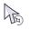

WINDOWS CURSOR / THE TIP IS THE POINT
点击位置，回到箭尖
上一版把点击点放在环心，靠一颗 2.2px 菱形标出来；看不清，就是设计的问题。这一版把尖还给箭头：箭尖 (5,4) 就是点击位置，星环缩到箭尾。

点击位置
尖是尖，环是环
左上尖端 = 热点 (5,4)；32 / 48 / 64 按比例缩放 (5,4) / (8,6) / (10,8)。
星环在箭尾，箭尾从环的缺口穿进去；星在环心，方向朝着箭头。
环不再围着点击点，所以不会把落点藏在圆心里。
light · 4x
32
48
deep · 4x
32
48
text · 1x
世界在此停留片刻。它并非梦境，亦非确凿之物。只是人在睁眼之前，最后一眼看见的明亮倒影。
photo · 1x
48